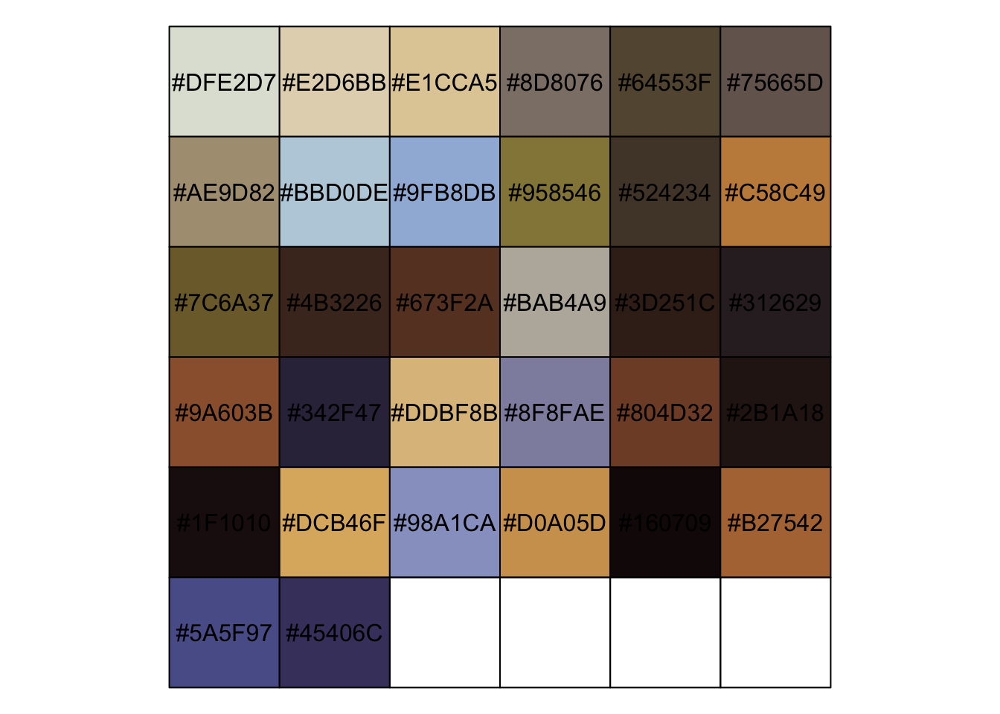
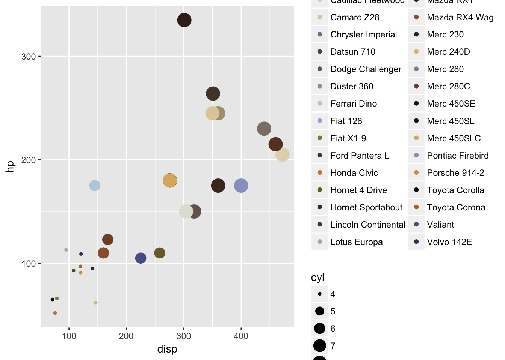

renaissance palette [WIP]
Andrea Cirillo
1/5/2017
If you are a man with the right amount of poetry in your heart, you get astonished looking at renaissance picture from great artists like Michelangelo, Perugino and Botticelli. But what makes their paintings so beauty?
Is the great dominance they show of drawing and painting techniques. As you can discover reading their technical notes, like for instance the scritti di pittura from Leonardo Da Vinci, they took their job really seriously, studying at their best how to better represent visible, and invisible, reality.
One of the aspects have always astonished me have been the great maestria in the use of colours, can you see this blue?
it is of an uncomparable beauty, and is wonderfully highlighted from surrounding colours. Starting from my astonishment I have found myself thinking about proposing what I have called renaissance palettes.
Those palettes of colours leverages technical studies and centuries of painting practices from the best renaissance painters, offering their sapience to our data viualisation. As we will discover in a few rows, each of the renaissance palettes is studied to be applied to one particular kind of data visualisation.
I have built them up directly from excellent reproductions of the original painting of those artists and they are freely available.
the three artists I chose are not random one: each of them was the maximum expert of one of the three main painting techniques developed during renaissance period:
- sfumato
- cangiantismo
- unione
those three techniques applied to data visualization are powerful allies with different kind of data, as we will say some paragraph below.
Leonardo’s Palette
master of sfumato

Michelangelo’s palette
master of cangiantismo
Raffaello’s palette
master of unione

palettes use cases
tech specs
palette building is obtained by the mean of a bit of machine learning. to get some more info give a look to the technical post (link al post tecnico che mandi poi anche a MilanoR)
how to employ them in ggplot2
library(devtools)
library(ggplot2)
install_github("andreacirilloac/paletteR")## Skipping install of 'paletter' from a github remote, the SHA1 (66780b00) has not changed since last install.
## Use `force = TRUE` to force installationlibrary(paletter)
download.file("https://andreacirilloac.github.io/dataviz/images/sacra_famiglia_canigiani.jpg", "image.jpg")
colours_vector <- palette_maker("image.jpg", number_of_colors = 32)## Warning: Quick-TRANSfer stage steps exceeded maximum (= 12397500)
ggplot(data = mtcars,aes(x = disp,y = hp, color = rownames(mtcars)))+
geom_point(stat = 'identity',aes( size = cyl)) +
scale_color_manual(values = colours_vector)